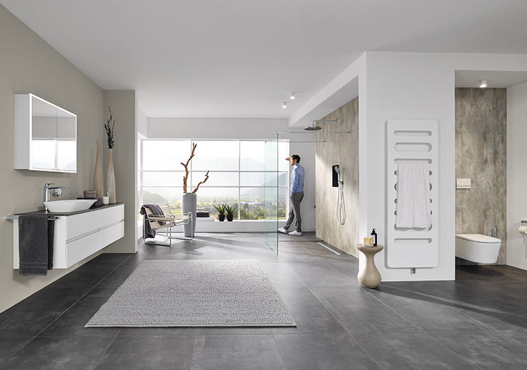
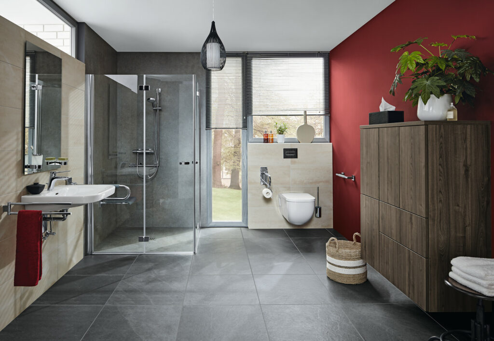

Materialien, Ausstattung und Raumgefühl lassen sich direkt erleben.
Badsanierung & Haustechnik in Bietigheim-Bissingen
Ein neues Bad beginnt mit einem klaren Gefühl.
Reiner GmbH verbindet Ausstellung, Beratung, Planung und Umsetzung zu einem hochwertigen Weg vom ersten Wunsch bis zum fertigen Bad.
Ausstellung vor Ort
Transparente Planung
Kundendienst & Haustechnik
Warum Reiner
Vom ersten Wunsch bis zum fertigen Bad: ein Weg, der sich sicher anfühlt.
Ein neues Bad ist eine persönliche Entscheidung. Reiner verbindet Ausstellung, Beratung, Planung und Umsetzung zu einem klaren Prozess, bei dem Kunden früh wissen, was möglich ist und was als Nächstes passiert.
Wunsch, Budget und Umsetzung werden früh sauber eingeordnet.
Haustechnik, Kundendienst und Wartung bleiben aus einer Hand.
Ausstellung
Raumgefühl sehen, Materialien erleben, sicher entscheiden.
Die Ausstellung wird als Premium-Vorteil inszeniert: Kunden sehen Oberflächen, Armaturen und Badwelten nicht nur online, sondern können ihr Projekt bewusst erleben.
- Badideen und Ausstattung im echten Raumgefühl
- Persönliche Beratung statt anonymer Produktliste
- Budget und Umsetzung früh realistisch einschätzen
Leistungen
Alles, was aus einem Badprojekt ein gutes Ergebnis macht.
Die wichtigsten Angebote werden nicht verstreut, sondern in drei klaren Entscheidungspfaden geführt.

Fokusauftrag
Badsanierung
Planung, Beratung und Umsetzung für moderne Badezimmer mit hochwertiger Wirkung.

Komfort & Zukunft
Barrierearme Bäder
Mehr Komfort, Sicherheit und langfristiger Wohnwert für jedes Alter.
Verlässlichkeit
Heizung & Kundendienst
Haustechnik, Service und Wartung für Anlagen, die dauerhaft funktionieren.
Ablauf
Der Weg zum neuen Bad wird so klar, dass Kunden schneller anfragen.
Von der ersten Idee bis zur finalen Abstimmung entsteht ein Ablauf, der Entscheidungen leichter macht und jedes Badprojekt professionell vorbereitet.
Wunsch erfassen
Badprojekt, Budgetrahmen und Dringlichkeit werden im Assistenten eingeordnet.
Ausstellung nutzen
Materialien, Stil und Ausstattung werden erlebbar statt nur beschrieben.
Planung starten
Aus der ersten Anfrage entsteht eine Beratung mit klaren nächsten Schritten.
Anfrage
Beratungstermin wählen und Badprojekt direkt anfragen.
Wählen Sie Ihr Anliegen, ein Wunschdatum und ein passendes Zeitfenster. Reiner meldet sich mit den nächsten sinnvollen Schritten.
01
Datum wählen
Wunschtag direkt im Kalender markieren.
02
Zeitfenster festlegen
Vormittag, Mittag oder Nachmittag auswählen.
03
Rückmeldung erhalten
Reiner stimmt den passenden Beratungstermin ab.
Telefon 07142 93 55 0
info@reinergmbh.com
Gansäcker 21, 74321 Bietigheim-Bissingen
Mo-Do 7.00-17.00 Uhr, Fr 7.00-16.00 Uhr
Beratungstermin anfragen
Ruhige Voranfrage mit direkter Terminauswahl.
FAQ
Fragen, die Kunden vor der Anfrage klären.
Kann ich mein Badprojekt erst in der Ausstellung besprechen?
Ja. Die Ausstellung ist ideal, um Stil, Materialien und Möglichkeiten früh abzustimmen.
Hilft Reiner auch bei barrierearmen Bädern?
Ja. Komfort, Sicherheit und langfristiger Wohnwert werden als eigener Projektpfad geführt.
Was passiert nach der Anfrage?
Ihre Angaben werden strukturiert vorbereitet, damit Reiner den passenden nächsten Schritt mit Ihnen abstimmen kann.